Uporabniški priročnik za uporabo spletnega geoportala GeoSG za učinkovito upravljanje prostorskih podatkov.
Geoportal GeoSG omogoča pregledovanje, vizualizacijo in upravljanje prostorskih podatkov , kot so katastrske parcele, stavbe, ceste in naslovi.
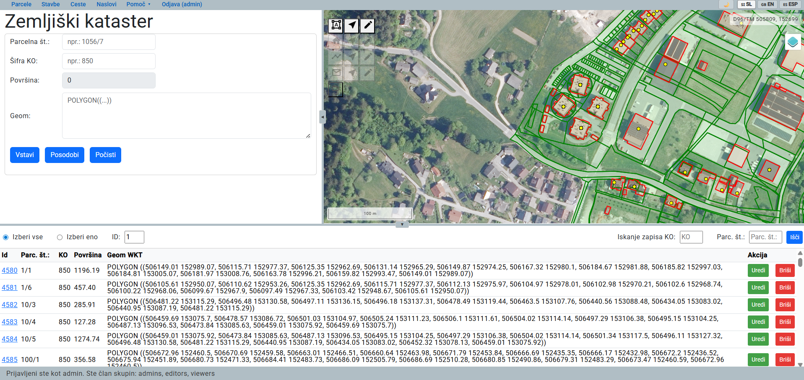
Glavne funkcionalnosti geoportala so razdeljene v posamezne zavihke, ki so dostopni prek navigacijskega menija na vrhu strani. Izberite želeni zavihek in sledite navodilom za uporabo posamezne funkcionalnosti.
Uporabniški vmesnik geoportala je sestavljen iz petih glavnih delov:
Navigacijski meni omogoča preklapljanje med posameznimi moduli geoportala . S klikom na izbrani zavihek se prikažeta ustrezna tabela in obrazec za delo s podatki.
Na desni strani navigacijskega menija so na voljo dodatne nastavitve, kjer lahko spremenite jezik geoportala (SI, EN, ESP) ter izberete barvno temo uporabniškega vmesnika. Poleg privzete svetle teme sta na voljo tudi alternativna barvna tema in nočni način.
Obrazec omogoča vnos novih prostorskih objektov z njihovimi atributnimi podatki ter urejanje obstoječih objektov.
Interaktivni zemljevid omogoča pregled podatkov, izbiro objektov ter risanje in urejanje geometrije.
Tabela prikazuje seznam zapisov ter omogoča pregled, iskanje in izbiro podatkov za nadaljnje delo.
Statusna vrstica prikazuje trenutno stanje geoportala ter njegove odzive na uporabnikove ukaze. Podrobnejši opis je na voljo v razdelku »Napredne funkcije«.
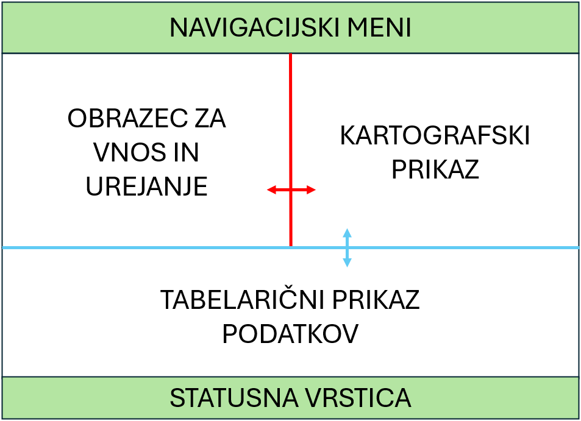
Na kartografskem prikazu (zgoraj desno) je na voljo gumb »Sloji« , ki omogoča upravljanje vidnosti prostorskih slojev.
Posamezne sloje lahko vklapljate in izklapljate s potrditvenimi polji, prav tako pa upravljate skupine slojev (npr. WMS GURS, WFS GURS, lastni in delovni sloji). Za prikaz posameznega sloja mora biti izbran sloj in njegova nadrejena skupina.
Podrobnejša razlaga posameznih slojev je na voljo v zavihku "Upravljanje slojev".
V zavihkih navigacijskega menija geoportala (Parcele, Stavbe, Ceste, Naslovi) je omogočeno delo z istoimenskimi vrstami prostorskih podatkov.
Gumbi za dodajanje, izbor in urejanje geometrij se nahajajo na levi strani kartografskega prikaza. Aktivni so glede na trenutno izbrani zavihek v navigacijskem meniju, kar pomeni, da vedno delate s podatki iz izbranega modula.
Podrobna uporaba funkcij je predstavljena ločeno za posamezne module v nadaljnjih zavihkih. Delo z različnimi vrstami prostorskih podatkov temelji na enakih principih, zato za razumevanje zadostuje pregled enega primera (npr. parcel).
Posamezni moduli se razlikujejo predvsem po atributih, ki so predstavljeni na začetku vsakega poglavja.
| Funkcija | Opis | Dejanje |
|---|---|---|
| Povečava | Približaj/oddalji pogled | Vrtenje koleščka miške |
| Premik | Premakni pogled po karti | Držanje levega gumba miške in vlečenje po karti |
V tabeli se prikažejo vse parcele iz baze katerih podatki so predstavljeni po stolpcih: ID, Parc. št., KO, Površina, Geom WKT.
Nad tabelo sta na voljo dva izbirna gumba:
Izbran mora biti zavihek parcel. Nato na levi strani kartografskega prikaza izberite ikono
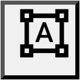
za risanje parcele. Ob premiku kazalca nad ikono se prikaže namig z opisom funkcije: "Začni risanje parcele". Poligon narišete z zaporednimi kliki na kartografskem prikazu, zajem pa zaključite z dvojnim klikom.WKT geometrija se samodejno prenese v obrazec (polje "Geom"). V kolikor želite jo lahko spreminjate. Obvezna je zapolnitev ostalih polj:
Izračun površine je izveden avtomatsko na osnovi geometrije in ga ni mogoče spremeniti.
Kliknite gumb Vstavi. Ob ustreznih uporabniških pravicah se parcela shrani v podatkovno bazo in prikaže v tabeli. Hkrati postane del vektorskega sloja, ki prikazuje to vrsto prostorskih podatkov.
Parcelo lahko izberete na dva načina: v tabeli s klikom na gumb Uredi ali neposredno na karti z orodjem "Izberi parcelo". Ne glede na izbran način se podatki o parceli naložijo v obrazec.
Atributi: Spremenite vrednosti v obrazcu (parcelni številko ali šifro KO).
Geometrija: Spremenite koordinate točk v zapisu geometrije.
Urejanje geometrije direktno na karti: Izberite ikono
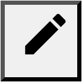
Uredi parcelo. Nato lahko z vlečenjem oglišč obstoječe parcele spreminjate njeno obliko. Ko končate, kliknite ikono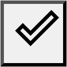
za izklop funkcije urejanja. WKT se posodobi znotraj obrazca na levi.Za posodobitev geometrije v bazi podatkov izberite akcijski gumb: Posodobi.
Spremembe na parceli se shranijo v bazo.
KAJ SE ZGODI, ČE KLIKNEMO VSTAVI?
V tabeli poiščite parcelo, ki jo želite izbrisati.
Povsem desno v tabeli v stolpcu "Akcija" izberite akcijski gumb: Briši.
V pojavnem potrditvenemu oknu nato potrdite brisanje parcele.
V tabeli se prikažejo vse stavbe iz baze (stolpci: ID, Št. stavbe, KO, Opis, Površina, Geom WKT).
Nad tabelo sta na voljo dva izbirna gumba:
Izbran mora biti zavihek stavb. Nato na levi strani kartografskega prikaza izberite ikono
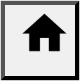
za risanje stavbe. Ob premiku kazalca nad ikono se prikaže namig z opisom funkcije: "Začni risanje stavbe". Poligon narišete z zaporednimi kliki na kartografskem prikazu, zajem pa zaključite z dvojnim klikom.WKT geometrija se samodejno prenese v obrazec (polje "Geom"). Izpolnite še:
Kliknite gumb Vstavi. Ob ustreznih uporabniških pravicah se stavba shrani v podatkovno bazo in prikaže v tabeli. Hkrati postane del vektorskega sloja, ki prikazuje to vrsto prostorskih podatkov.
Stavbo lahko izberete na dva načina: v tabeli s klikom na gumb Uredi ali neposredno na karti z orodjem "Izberi stavbo". Po izbiri se podatki samodejno naložijo v obrazec.
Atributi: Spremenite vrednosti v obrazcu (številko stavbe, šifro KO, opis ali površino).
Urejanje geometrije direktno na karti: Izberite ikono Uredi stavbo. Nato lahko z vlečenjem oglišč obstoječi stavbi spreminjate obliko. Ko končate, kliknite ikono za izklop funkcije urejanja. WKT se samodejno posodobi v obrazcu.
Za posodobitev geometrije ali atributov v bazi podatkov izberite akcijski gumb: Posodobi.
Spremembe na stavbi se shranijo v bazo.
V tabeli poiščite stavbo, ki jo želite izbrisati.
Povsem desno v tabeli v stolpcu "Akcija" izberite akcijski gumb: Briši.
V pojavnem potrditvenem oknu nato potrdite brisanje stavbe.
V tabeli se prikažejo vse ceste iz baze (stolpci: ID, Ime ulice, Upravljalec, Vzdrževalec, Dolžina, Geom WKT).
Nad tabelo sta na voljo dva izbirna gumba:
Izbran mora biti zavihek cest. Nato na levi strani kartografskega prikaza izberite ikono
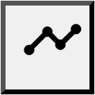
za risanje ceste. Ob premiku kazalca nad ikono se prikaže namig z opisom funkcije: "Začni risanje ceste". Cesto narišete kot linijo z zaporednimi kliki na kartografskem prikazu, zajem pa zaključite z dvojnim klikom.WKT geometrija se samodejno prenese v obrazec (polje "Geom"). Izpolnite še:
Kliknite gumb Vstavi. Ob ustreznih uporabniških pravicah se cesta shrani v podatkovno bazo in prikaže v tabeli. Hkrati postane del vektorskega sloja, ki prikazuje to vrsto prostorskih podatkov.
Cesto lahko izberete na dva načina: v tabeli s klikom na gumb Uredi ali neposredno na karti z orodjem "Izberi cesto". Po izbiri se podatki samodejno naložijo v obrazec.
Atributi: Spremenite vrednosti v obrazcu (ime ulice, upravljalca, vzdrževalca ali dolžino).
Urejanje geometrije direktno na karti: Izberite ikono Uredi cesto. Nato lahko z vlečenjem vozlišč spreminjate potek ceste. Ko končate, kliknite ikono za izklop funkcije urejanja. WKT se samodejno posodobi v obrazcu.
Za posodobitev geometrije ali atributov v bazi podatkov izberite akcijski gumb: Posodobi.
Spremembe na cesti se shranijo v bazo.
V tabeli poiščite cesto, ki jo želite izbrisati.
Povsem desno v tabeli v stolpcu "Akcija" izberite akcijski gumb: Briši.
V pojavnem potrditvenem oknu nato potrdite brisanje ceste.
V tabeli se prikažejo vsi naslovi iz baze (stolpci: ID, Ulica, Hišna številka, Poštna številka, Pošta, Geom WKT).
Nad tabelo sta na voljo dva izbirna gumba:
Izbran mora biti zavihek naslovov. Nato na levi strani kartografskega prikaza izberite ikono za risanje naslova. Ob premiku kazalca nad ikono se prikaže namig z opisom funkcije: "Začni risanje naslova". Naslov določite s klikom na kartografskem prikazu, kjer se ustvari točka.
WKT geometrija se samodejno prenese v obrazec (polje "Geom"). Izpolnite še:
Kliknite gumb Vstavi. Ob ustreznih uporabniških pravicah se naslov shrani v podatkovno bazo in prikaže v tabeli. Hkrati postane del vektorskega sloja, ki prikazuje to vrsto prostorskih podatkov.
Naslov lahko izberete na dva načina: v tabeli s klikom na gumb Uredi ali neposredno na karti z orodjem "Izberi naslov". Po izbiri se podatki samodejno naložijo v obrazec.
Atributi: Spremenite vrednosti v obrazcu (ulico, hišno številko, poštno številko ali pošto).
Urejanje geometrije direktno na karti: Izberite ikono Uredi naslov. Nato lahko z vlečenjem točke spremenite položaj naslova. Ko končate, kliknite ikono za izklop funkcije urejanja. WKT se samodejno posodobi v obrazcu.
Za posodobitev geometrije ali atributov v bazi podatkov izberite akcijski gumb: Posodobi.
Spremembe na naslovu se shranijo v bazo.
V tabeli poiščite naslov, ki ga želite izbrisati.
Povsem desno v tabeli v stolpcu "Akcija" izberite akcijski gumb: Briši.
V pojavnem potrditvenem oknu nato potrdite brisanje naslova.
Kontrola "Sloji" v zgornjem desnem kotu kartografskega prikaza omogoča vklapljanje in izklapljanje posameznih prostorskih slojev ter skupin slojev. Za prikaz posameznega sloja mora biti označen tako sloj kot tudi njegova nadrejena skupina. Ob privzetem zagonu aplikacije so vsi posamezni sloji vključeni, vendar je aktivna samo zadnja skupina slojev. Zato ob vstopu v aplikacijo vidimo le delovne sloje. Spodnja slika prikazuje to začetno stanje ter pregled vseh slojev, ki so na voljo v aplikaciji.
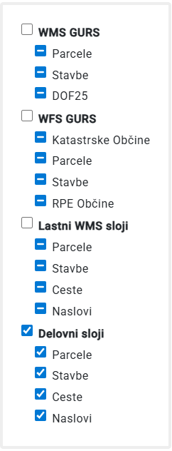
Na karti (desna plošča) poiščite gumb "Sloji"
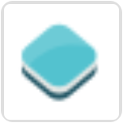
v zgornjem desnem kotu. Kliknite nanj za odpiranje menija slojev.Kliknite na kvadratek poleg imena posameznega sloja ali skupine slojev. Sloj bo prikazan na karti samo, če sta hkrati aktivirana posamezni sloj in njegova skupina.
GeoSG uporablja več vrst slojev, ki se razlikujejo glede na način prikaza, količino podatkov in namen uporabe.
WMS (Web Map Service) je standard OGC (Open Geospatial Consortium) za dostop do kartografskih podatkov v obliki slik prek spleta. WMS sloji se prikazujejo kot rastrske slike (npr. PNG ali JPEG), zato omogočajo hiter prikaz večjih prostorskih območij, ne omogočajo pa neposrednega dostopa do geometrije ali atributov. V aplikaciji GeoSG so na voljo izbrani WMS sloji Geodetske uprave Republike Slovenije (GURS), do katerih aplikacija dostopa prek povezav, objavljenih na portalu eProstor. Razpoložljivi sloji so:
WFS (Web Feature Service) je standard OGC (Open Geospatial Consortium) za dostop do vektorskih prostorskih podatkov prek spleta. Omogoča prenos geometrije in pripadajočih atributov, kar omogoča njihovo analizo in nadaljnjo obdelavo. V aplikaciji GeoSG se WFS sloji Geodetske uprave Republike Slovenije uporabljajo kot referenčni podatki, ki omogočajo pregled posameznih prostorskih objektov (entitet) skupaj z njihovimi atributi. Povezave do teh podatkov je bila pridobljena prek portala eProstor.
Razpoložljivi sloji so:Lastni WMS sloji: To so sloji, ki jih GeoServer servira iz PostgreSQL/PostGIS baze portala GeoSG. Predstavljajo rastrski prikaz podatkov, ki se dinamično generira na strežniku. Prikazujejo drugačno stanje kot podatki GURS, saj so lahko glede na izvorne podatke, ti urejeni, dodani ali izbrisani.
WMS storitev je dostopna tudi neposredno prek GeoServerja, kar omogoča vključitev slojev v zunanja GIS orodja (npr. QGIS): http://64.225.137.73:8080/geoserver/wms?service=WMS&request=GetCapabilities
Isti sloji so na voljo tudi prek WFS storitve, ki omogoča dostop do vektorskih podatkov in njihovo nadaljnjo obdelavo: http://64.225.137.73:8080/geoserver/wfs?service=WFS&request=GetCapabilities
Vektorski sloji iz baze GeoSG: To so sloji, ki se nalagajo neposredno iz PostgreSQL/PostGIS baze geoportala GeoSG kot vektorski podatki. Vsebujejo geometrijo in pripadajoče atribute, kar omogoča interakcijo z objekti. Delovni vektorski sloji predstavljajo osnovni delovni nivo aplikacije, saj omogočajo neposredno delo s podatki.
| Lastnost | WMS (rastrski) | WFS (vektorski) | Delovni vektorski |
|---|---|---|---|
| Format prenosa | PNG/JPEG slika | GML/GeoJSON geometrija | GeoJSON geometrija |
| Hitrost | Zelo hiter | Počasen (veliko podatkov) | Srednje hiter |
| Selekcija objektov | Ne | Da | Da |
| Urejanje podatkov | Ne | Ne (samo ogled) | Da |
| Prikaže atribute | Ne | Da | Da |
Sloji se prikazujejo v naslednjem vrstnem redu (od spodaj navzgor):
Aplikacija omogoča uvoz lastnih prostorskih datotek kot dodatnih slojev na karti. Podprti so formati GeoPackage (.gpkg), Shapefile (.shp) in KML (.kml). Uvoženi sloji se prikažejo nad obstoječimi sloji in jih lahko poljubno vklapljate ali izklapljate.
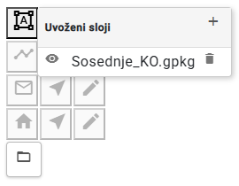
Razdelek "Uvoženi sloji"
se nahaja v zgornjem desnem delu kartografskega prikaza.
Kliknite nanj, nato pa v odprtem oknu pritisnite gumb
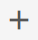
za uvoz datoteke.Kliknite gumb za izbiro datoteke (ikona mape). Podprti formati:
| Format | Razširitev | Opomba |
|---|---|---|
| GeoPackage | .gpkg | Priporočen format — vsebuje lahko več slojev |
| Shapefile | .shp + .dbf + .prj | Izberite samo .shp datoteko |
| KML | .kml | Google Earth format |
Po izbiri datoteke se sloj samodejno naloži na karto. V razdelku "Uvoženi sloji" se prikaže ime datoteke z ikonami za upravljanje, ki so prikazane v spodnji tabeli.
| Ikona | Funkcija | Opis |
|---|---|---|
| Vidnost | Vklopi/izklopi prikaz sloja na karti | |
| Odstrani sloj | Trajno odstrani sloj iz aplikacije |
Po uvozu se sloji samodejno dodajo v seznam slojev na desni strani, kjer so na dnu prikazani v ločeni skupini "Uvoženi sloji".
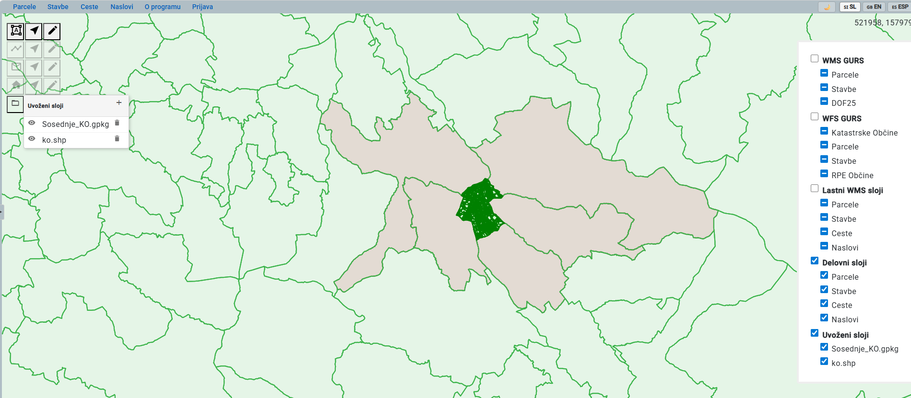
.prj), se privzeto predpostavi EPSG:4326 (WGS84).
.shp (geometrija), .dbf (atributi) in .prj (projekcija). Vse tri morajo biti prisotne v isti mapi. Pri izbiranju datoteke izberite .shp , ostali dve se prebereta samodejno.
Za izvoz vseh podatkov (parcele, stavbe, ceste in naslovi) pritisnite
Alt + Shift + E.
Aplikacija bo samodejno ustvarila GeoPackage datoteko (.gpkg)
in jo prenesla v vašo mapo za prenose kot: podatki.gpkg.
Snap funkcionalnost omogoča, da se pri risanju ali urejanju geometrije oglišča samodejno pripnejo na obstoječa oglišča ali linije. Ko se kurzor približa obstoječi točki ali liniji, se na njej prikaže modra pika, kar pomeni, da je snap aktiven. S klikom se nova točka natančno poravna z obstoječo geometrijo.
Na dnu aplikacije je prikazana zelena statusna vrstica, ki prikazuje trenutno stanje aplikacije in njene odgovore. Primer odgovora je na spodnji sliki, še nekaj možnih sporočil pa je razvidnih iz tabele, ki sliki sledi.
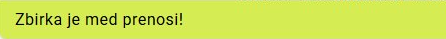
| Sporočilo | Pomen |
|---|---|
| "Zbirka je med prenosom" | Nalaganje podatkov iz baze ali GeoServerja |
| "Parcela uspešno shranjena" | Uspešno izvedena CRUD operacija |
| "Nimate pravic za urejanje" | Uporabnik ni prijavljen ali ne pripada skupini 'editors' ali 'admin' |
| "Prijavljen: Miha (editors)" | Po prijavi se prikaže uporabniško ime prijavljenega uporabnika in skupina, v katero uporabnik spada. |
| "Napaka pri shranjevanju" | Prišlo je do napake (preverite konzolo brskalnika) |
Aplikacija za zaledni API uporablja Django REST Framework. Vsi API vmesniki so dokumentirani v Swagger uporabniškem vmesniku.
V brskalniku odprite:
http://64.225.137.73:8000/accounts/login
.
Preusmerjeni boste na uvodno spletno stran, kjer je za nadaljevanje potrebna prijava z enakimi prijavnimi podatki kot v geoportalu GeoSG.
Parcels:
/parcels/parcels/ - Seznam vseh parcel/parcels/parcels_view/insert2/ - Vnos nove parcele/parcels/parcels_view/update/{id}/ - Posodobitev parcele/parcels/parcels/{id}/ - Brisanje parceleBuildings, Roads, Addresses: uporabljajo enako strukturo endpointov kot API Parcels
Swagger omogoča interaktivno preizkušanje REST API vmesnikov neposredno v brskalniku:
GET /parcels/parcels/)Aplikacija uporablja Django avtentikacijski mehanizem za preverjanje identitete uporabnikov ter nadzor dostopa glede na dodeljeno uporabniško skupino. Pravice določajo, ali lahko uporabnik podatke zgolj pregleduje ali jih tudi dodaja, ureja in briše.
| Skupina | Pravice |
|---|---|
| admin | Polne pravice, vključno z vnosom, urejanjem, brisanjem podatkov in dostopom do administracije. |
| editors | Vnos, urejanje in brisanje podatkov. |
| viewers | Samo pregled podatkov, brez možnosti urejanja. |
| neprijavljen uporabnik | Omejen dostop, praviloma samo za pregled podatkov. |
V zgornjem desnem delu aplikacije kliknite zavihek Login.
V prijavni obrazec vnesite svoje uporabniško ime in geslo, nato kliknite gumb za prijavo.
Po uspešni prijavi se v statusni vrstici prikaže vaše uporabniško ime in pripadajoča uporabniška skupina.
Geoportal GeoSG omogoča prilagoditev uporabniškega vmesnika glede na uporabnikove preference. Na voljo sta dve skupini nastavitev: večjezičnost in barvne teme, ki sta dostopni v desnem delu navigacijske vrstice.
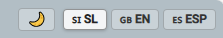
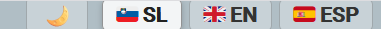
Geoportal GeoSG podpira tri jezike uporabniškega vmesnika:
Jezik uporabnik zamenja s klikom na ustrezen gumb v navigacijski vrstici. Po izbiri jezika se posodobijo vsi ključni elementi uporabniškega vmesnika, kot so meniji, obrazci, gumbi, namigi (tooltipi), sistemska sporočila in naslovi slojev v kontroli slojev.
Geoportal omogoča izbiro med tremi barvnimi temami uporabniškega vmesnika. Temo zamenjate s klikom na gumb v navigacijski vrstici na katerem je privzeto prikazan simbol lune: 🌙
Gumb prikazuje temo geoportala na katero preklaplate.
| Tema | Ikona | Opis |
|---|---|---|
| Svetla tema | 🌟 | Privzeta tema s svetlim ozadjem in temnim besedilom. Primerna za uporabo v dobro osvetljenem okolju. |
| Temna tema | 🌙 | Temna barvna shema (nočni način) s svetlim besedilom. Primerna za delo v slabše osvetljenem okolju in zmanjšuje obremenitev oči. |
| Alternativna tema | 🎨 | Barvna kombinacija temnomodre in bele barve, ki predstavlja alternativo svetli temi in temelji na značilnih barvah Mestne občine Slovenj Gradec. |
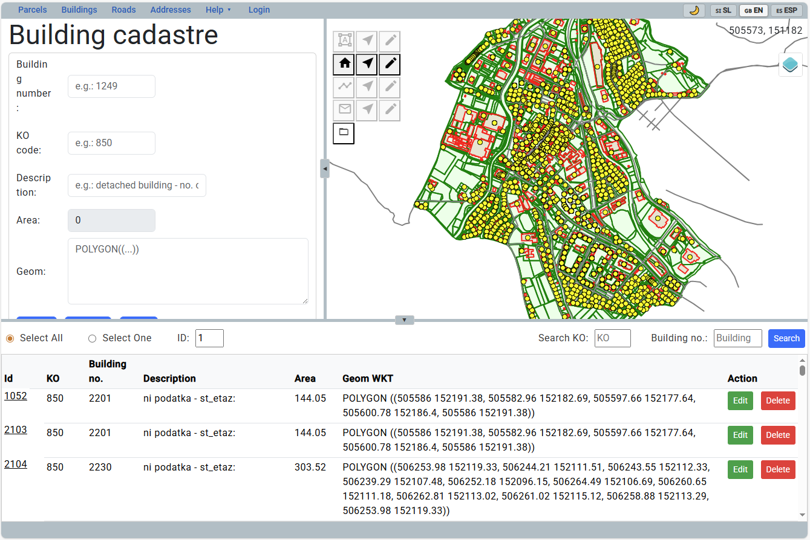
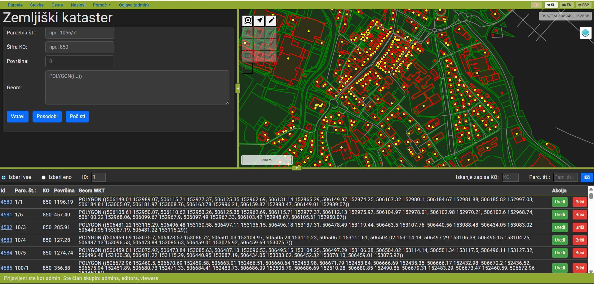
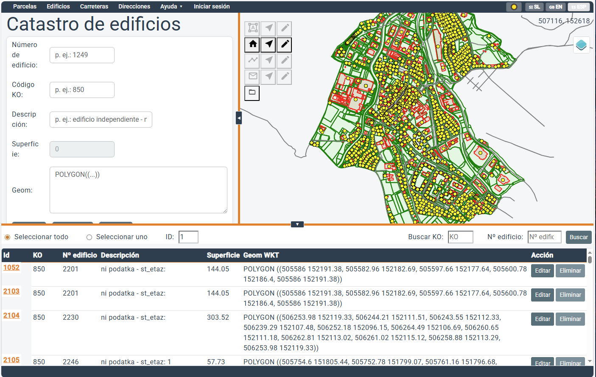
http://[strežnik]/swagger/.
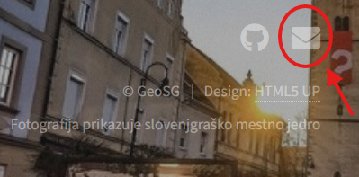